Numbers, Fractions, Decimals, and Percents
Welcome to Our Site
I greet you this day,
For the Classic ACT exam:
The ACT Mathematics test is a timed exam...60 questions in 60 minutes
This implies that you have to solve each question in one minute.
Each of the first 20 questions (less challenging) will typically take less than a minute a solve.
Each of the next 20 questions (medium challenging) may take about a minute to solve.
Each of the last 20 questions (more challenging) may take more than a minute to solve.
The goal is to maximize your time.
You use the time saved on the questions you solve in less than a minute to solve questions that will take more
than a minute.
So, you should try to solve each question correctly and timely.
So, it is not just solving a question correctly, but solving it correctly on time.
Please ensure you attempt all ACT questions.
There is no negative penalty for a wrong answer.
Also: please note that unless specified otherwise, geometric figures are drawn to scale. So, you can figure out
the correct answer by eliminating the incorrect options.
Other suggestions are listed in the solutions/explanations as applicable.
These are the solutions to the ACT past questions on the topics: Numbers, Fractions, Decimals, and Percents.
When applicable, the TI-84 Plus CE calculator (also applicable to TI-84 Plus calculator) solutions are provided
for some questions.
The link to the video solutions will be provided for you. Please
subscribe to the YouTube channel to be notified of upcoming livestreams. You are welcome to ask questions during
the video livestreams.
If you find these resources valuable and helpful in your passing the
Mathematics test of the ACT, please consider making a donation:
Cash App: $ExamsSuccess or
cash.app/ExamsSuccess
PayPal: @ExamsSuccess or
PayPal.me/ExamsSuccess
Venmo: @ExamsSuccess or
Venmo.com/u/ExamsSuccess
Your donation is appreciated.
Comments, ideas, areas of improvement, questions, and constructive
criticisms are welcome.
Feel free to contact me. Please be positive in your message.
I wish you the best.
Thank you.
For calculations involving scientific notation as applicable, change the mode to SCI.
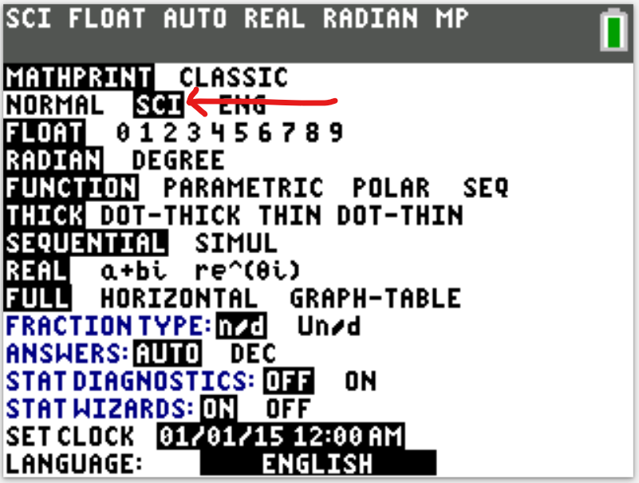
Percent Applications
$ \underline{\text{Change and Percent of Change}} \\[3ex] (1.)\:\: change = new - initial \\[5ex] (2.)\:\: \%\;\;of\;\;change = \dfrac{change}{initial} * 100 \\[5ex] (3.)\;\; \text{If A is p% more than B, then A = (100 + p)% of B} \\[3ex] (4.)\;\; \text{If A is p% less than B, then A = (100 – p)% of B} \\[5ex] \underline{\text{Percent:Proportion}} \\[3ex] (5.)\;\; \dfrac{is}{of} = \dfrac{\%}{100} \\[5ex] (6.)\;\;\underline{\text{Percent:Equation}} \\[3ex] is \rightarrow equal\;\;to \\[3ex] of\;\; \rightarrow multiply \\[3ex] what \;\; \rightarrow variable \\[5ex] \underline{\text{Wholesale and Retail}} \\[3ex] (7.)\:\: \text{Sale Price } = \text{Initial Price } - \text{Discount} \\[5ex] (8.)\:\: \%\;Discount = \dfrac{Discount}{\text{Initial Price}} * 100 \\[5ex] (9.)\;\; \text{Profit } = \text{Selling Price } - \text{Cost Price} \\[3ex] (10.)\;\; \%\;Profit = \dfrac{Profit}{\text{Cost Price}} * 100 \\[5ex] (11.)\;\; \text{Loss } = \text{Cost Price } - \text{Selling Price} \\[3ex] (12.)\;\; \%\;Loss = \dfrac{Loss}{\text{Cost Price}} * 100 $
A. −4
B. −2
C. 2
D. 4
E. 14
$ |4 - 3| - |2 - 5| \\[3ex] |1| - |-3| \\[3ex] 1 - 3 \\[3ex] -2 $
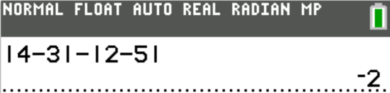
She sees mile marker 117 at noon, and exactly 20 minutes later she sees mile marker 97.
What is the average speed, in miles per hour, of their car over these 20 minutes.
$ F.\;\; 23.4 \\[3ex] G.\;\; 39 \\[3ex] H.\;\; 60 \\[3ex] J.\;\; 70 \\[3ex] K.\;\; 100 \\[3ex] $
At noon, Mia sees mile marker 117
Then, after 20 minutes, she sees mile marker 97
This implies that her mother drove 117 − 97 = 20 miles in 20 minutes
$ distance = 20\;miles \\[3ex] time = 20\;minutes \\[3ex] speed = \dfrac{distance}{time} \\[5ex] = \dfrac{20}{20} \\[5ex] = 1\;mile/minute \\[3ex] $ On average, Mia's mother drove 1 mile in 1 minute.
In other words, her average speed is 1 mile per minute.
But the question wants us to calculate the speed in miles per hour
$ 60\;minutes = 1\;hour \\[3ex] 1\;mile\;\;per\;\;minute = ?\;mile\;\;per\;\;hour \\[3ex] \underline{Unity\;\;Fraction\;\;Method} \\[3ex] \dfrac{1\;mile}{minute} * \dfrac{...\;minute}{...\;hour} \\[5ex] \dfrac{1\;mile}{minute} * \dfrac{60\;minute}{1\;hour} \\[5ex] 60\;miles/hour $ On average, Mia's mother drove 60 miles in 1 hour.
Her average speed is 60 miles per hour. (60 mph)
$ A.\;\; \dfrac{5}{8}, \;\; 0.6, \;\; 0.08 \\[5ex] B.\;\; 0.6, \;\; \dfrac{5}{8}, \;\; 0.08 \\[5ex] C.\;\; 0.6, \;\; 0.08, \;\; \dfrac{5}{8} \\[5ex] D.\;\; 0.08, \;\; \dfrac{5}{8}, \;\; 0.6 \\[5ex] E.\;\; 0.08, \;\; 0.6, \;\; \dfrac{5}{8} \\[5ex] $
Least to Greatest is to sort in ascending order
$ 0.6, \;\; 0.08, \;\; \dfrac{5}{8} \\[5ex] 0.6, \;\; 0.08, \;\; 0.625 \\[3ex] 0.08 \lt 0.6 \lt 0.625 \\[3ex] \implies \\[3ex] 0.08, \;\; 0.6, \;\; \dfrac{5}{8} $
Least to Greatest is to sort in ascending order

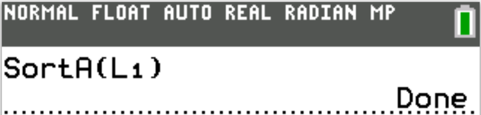
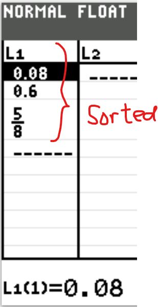
They have decided to spend $150 for a light and sound show, $400 for refreshments, and $50 for decorations.
These are the only expenses.
Given that the Student Council estimates 500 students will attend the dance, what should be the price, per student, for admission to the dance if the Student Council wants to raise as close as possible to $300 after paying expenses?
$ A.\;\; \$0.60 \\[3ex] B.\;\; \$1.20 \\[3ex] C.\;\; \$1.67 \\[3ex] D.\;\; \$1.80 \\[3ex] E.\;\; \$3.33 \\[3ex] $
Total Expenses = $150 + $400 + $50 = $600
Expected Profit = $300
Expected Income = $600 + $300 = $900
Expected Number of students = 500
Price per student to generate expected income = 900 ÷ 500 = $1.80
JoAnna has already driven 180 miles at an average speed of 60 miles per hour.
What is the minimum average speed, in miles per hour, that JoAnna can drive for the remainder of the route and have a driving time of 9 hours for the entire trip?
$ A.\;\; 45 \\[3ex] B.\;\; 50 \\[3ex] C.\;\; 55 \\[3ex] D.\;\; 60 \\[3ex] E.\;\;\text{Cannot be determined from the given information} \\[3ex] $
$ s...t...d \implies speed \cdot time = distance \\[3ex] \underline{Entire\;\;Journey} \\[3ex] Distance = 450\;miles \\[3ex] Time = 9\;hours \\[5ex] \underline{Already\;\;Driven} \\[3ex] Distance = 180\;miles \\[3ex] Speed = 60\;miles\;per\;hour \\[3ex] Time = \dfrac{Distance}{Speed} = \dfrac{180}{60} = 3\;hours \\[5ex] \underline{Remaining\;\;Journey} \\[3ex] Distance = 450 - 180 = 270\;miles \\[3ex] Time = 9 - 3 = 6\;hours \\[3ex] Speed = \dfrac{Distance}{Speed} \\[5ex] Speed = \dfrac{270}{6} \\[5ex] Speed = 45\;miles\;per\;hour \\[3ex] $ The minimum average speed that JoAnna can drive for the remainder of the route and have a driving time of 9 hours for the entire trip is 45 miles per hour.
What is the new room rate?
$ F.\;\; \$ 16.00 \\[3ex] G.\;\; \$ 80.20 \\[3ex] H.\;\; \$ 82.00 \\[3ex] J.\;\; \$ 96.00 \\[3ex] K.\;\; \$ 100.00 \\[3ex] $
$ Old\;\;room\;\;rate = \$80 \\[3ex] 20\%\;\;increase \\[3ex] = 20\%\;\;of\;\;\$80.00 \\[3ex] = 0.2(80) \\[3ex] = \$16 \\[5ex] New\;\;room\;\;rate \\[3ex] = Old\;\;room\;\;rate + Increase \\[3ex] = \$80 + \$16 \\[3ex] = \$96.00 $
$ F.\;\; 18 \\[3ex] G.\;\; 23 \\[3ex] H.\;\; 28 \\[3ex] J.\;\; 30 \\[3ex] K.\;\; 39 \\[3ex] $
Due to the fact that one minute is allocated to each question on the ACT (60 minutes for 60 questions), it is better to check the solution to this question by their answer options.
So, let us check and eliminate until we get the answer.
$ \underline{Option\;F} \\[3ex] 18 \div 5 = 3 \;R\; 3 \; \checkmark \\[3ex] 18 \div 6 = 3 \;R\;0 \;\text{remainder is 0, not 4} \\[3ex] NEXT \\[5ex] \underline{Option\;G} \\[3ex] 23 \div 5 = 4 \;R\; 3 \; \checkmark \\[3ex] 23 \div 6 = 3 \;R\; 5 \;\text{remainder is 3, not 4} \\[3ex] NEXT \\[5ex] \underline{Option\;H} \\[3ex] 28 \div 5 = 5 \;R\; 3 \; \checkmark \\[3ex] 28 \div 6 = 4 \;R\; 4 \; \checkmark \\[3ex] STOP \\[3ex] $ Option H is the correct answer.
This is the answer because the answer choices are in ascending order.
Student: Is there another way to do this question without checking by the answer options?
Teacher: Yes, we can do it: Modular Arithmetic
However, I think it takes more than a minute to do.
$ Let: \\[3ex] dividend = d \\[3ex] quotient = q \\[3ex] 1st:\;\; \text{Remainder of 3 when divided by 5} \\[3ex] d \equiv 3 \mod 5...cong.(1) \\[5ex] 2nd:\;\; \text{Remainder of 4 when divided by 6} \\[3ex] d \equiv 4 \mod 6 ...cong.(2) \\[5ex] \implies \\[3ex] d = 6q + 4 ...eqn.(1) \\[3ex] Substitute\;\;eqn.(1) \;\;for\;\;d\;\;in\;\;cong.(1) \\[3ex] 6q + 4 \equiv 3 \mod 5 \\[3ex] \text{Test positive integers for q beginning from the first positive integer} \\[3ex] 6(1) + 4 = 10 \equiv 0 \mod 5...Not\;\;3 \\[3ex] 6(2) + 4 = 16 \equiv 1 \mod 5...Not\;\;3 \\[3ex] 6(3) + 4 = 22 \equiv 2 \mod 5...Not\;\;3 \\[3ex] 6(4) + 4 = 28 \equiv 3 \mod 5 \;\checkmark \\[3ex] \implies \\[3ex] d = 28 $
The number b is negative and odd.
The number a − b is:
F. positive and even.
G. positive and odd.
H. negative and even.
J. negative and odd.
K. zero.
Let us test this statement with some values of a and b
$ Let: \\[3ex] \underline{Example\;1} \\[3ex] a = 6 ...\text{positive and even} \\[3ex] b = -3 ...\text{negative and odd} \\[3ex] a - b \\[3ex] 6 - (-3)...\text{subtraction operation} \\[3ex] 6 + 3 \\[3ex] 9...\text{positve and odd} \\[5ex] \underline{Example\;2} \\[3ex] a = 2 ...\text{positive and even} \\[3ex] b = -5 ...\text{negative and odd} \\[3ex] a - b \\[3ex] 2 - (-5)...\text{subtraction operation} \\[3ex] 2 + 5 \\[3ex] 7...\text{positve and odd} $
$ F.\;\; 0 \\[3ex] G.\;\; 1 \\[3ex] H.\;\; 2 \\[3ex] J.\;\; 3 \\[3ex] K.\;\; 4 \\[3ex] $
Let us test some integers for x to see what we can get.
We shall skip all positive numbers less than or equal to 4 because we need to get a positive prime number.
$ (x - 1)(x - 4) \\[3ex] Test\;\;x = 5 \\[3ex] (5 - 1)(5 - 4) = 4(1) = 4 ...Not\;\;prime \\[5ex] Test\;\;x = 7 \\[3ex] (7 - 1)(7 - 4) = 6(3) = 18 ...Not\;\;prime \\[5ex] Test\;\;x = -1 \\[3ex] (-1 - 1)(-1 - 4) = (-2)(-5) = 10 ...Not\;\;prime \\[5ex] Test\;\;x = -3 \\[3ex] (-3 - 1)(-3 - 4) = (-4)(-7) = 28 ...Not\;\;prime \\[5ex] \text{This applies to all odd numbers: 9, 11, 13, ... and −1, −3, −5, ...} \\[3ex] \text{The odd numbers will give a positive composite (not positive prime)} \\[5ex] Test\;\;x = 6 \\[3ex] (6 - 1)(6 - 4) = 5(2) = 10 ...Not\;\;prime \\[5ex] Test\;\;x = 8 \\[3ex] (8 - 1)(8 - 4) = 7(4) = 28 ...Not\;\;prime \\[5ex] Test\;\;x = -2 \\[3ex] (-2 - 1)(-2 - 4) = (-3)(-6) = 18 ...Not\;\;prime \\[5ex] Test\;\;x = -4 \\[3ex] (-4 - 1)(-4 - 4) = (-5)(-8) = 40 ...Not\;\;prime \\[5ex] \text{This applies to all even numbers: 10, 12, 14, ... and −2, −4, −6, ...} \\[3ex] \text{The even numbers will give a positive composite (not positive prime)} \\[3ex] $ As you can see, there is no number that we substutute for x which will give a positive prime number.
Hence, the correct answer is zero: Option F.
Each student cut his or her string into pieces of equal length.
Which of the following CANNOT be the length, in inches, of any student’s pieces?
$ A.\;\; \dfrac{1}{16} \\[5ex] B.\;\; \dfrac{1}{2} \\[5ex] C.\;\; 1 \\[3ex] D.\;\; 16 \\[3ex] E.\;\; 36 \\[3ex] $
72 inches would be cut into equal pieces (piecese of equal length)
Let us analyze each option to determine the correct answer.
Option A
1 ÷ 16 = 0.0625 inches
Can we have equal lengths of 0.0625 inch from a string length of 72 inches?
72 ÷ 0.0625 = 1152
Yes, we can have 1152 pieces of equal lengths of 0.0625 inch each
Option B
1 ÷ 2 = 0.5 inches
Can we have equal lengths of 0.5 inch from a string length of 72 inches?
72 ÷ 0.5 = 144
Yes, we can have 144 pieces of equal lengths of 0.5 inch each
Option C
1 inch
Can we have equal lengths of 1 inch from a string length of 72 inches?
72 ÷ 1 = 72
Yes, we can have 72 pieces of equal lengths of 1 inch each
Option D
16 inches
Can we have equal lengths of 16 inches from a string length of 72 inches?
72 ÷ 16 = 4.5
This is not an integer. There is a remainder.
We can have 4 equal lengths of 16 inches each; however the remainder will not be an equal length of 16 inches.
So, this option is the correct answer but let us go ahead and analyze the final option.
Option E
36 inches
Can we have equal lengths of 36 inches from a string length of 72 inches?
72 ÷ 36 = 22
Yes, we can have 2 pieces of equal lengths of 36 inches each
Option D is the correct answer.
The plan is for Joe to jog his 3 miles at 4 miles per hour (mph), Tom to jog his 3 miles at 5 mph, and then Alexis to jog her 3 miles at 6 mph.
In how many hours and minutes does this 3-person team plan to complete the 9-mile relay?
$ A.\;\; \text{0 hours 36 minutes} \\[3ex] B.\;\; \text{1 hour 48 minutes} \\[3ex] C.\;\; \text{1 hour 51 minutes} \\[3ex] D.\;\; \text{2 hours 15 minutes} \\[3ex] E.\;\; \text{2 hours 25 minutes} \\[3ex] $
$ s...t...d \\[3ex] speed * time = distance \\[3ex] time = \dfrac{distance}{speed} \\[5ex] \underline{Joe} \\[3ex] d = 3\;miles \\[3ex] s = 4\;mph \\[3ex] t = \dfrac{3}{4}\;hour \\[5ex] \underline{Tom} \\[3ex] d = 3\;miles \\[3ex] s = 5\;mph \\[3ex] t = \dfrac{3}{5}\;hour \\[5ex] \underline{Alexis} \\[3ex] d = 3\;miles \\[3ex] s = 6\;mph \\[3ex] t = \dfrac{3}{6} = \dfrac{1}{2}\;hour \\[5ex] \underline{3-Person\;\;Team} \\[3ex] time = \dfrac{3}{4} + \dfrac{3}{5} + \dfrac{1}{2} \\[5ex] = \dfrac{15 + 12 + 10}{20} \\[5ex] = \dfrac{37}{20} \\[5ex] = 1.85\;hours \\[3ex] = 1\;hour + 0.85\;hour \\[3ex] = 1\;hour + \left(0.85\;hour * \dfrac{60\;minutes}{1\;hour}\right) \\[5ex] = 1\;hour + 51\;minutes $
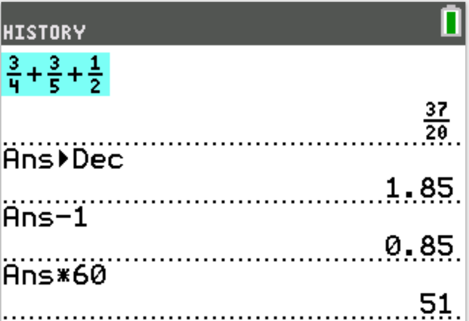
Two fractions are indicated on the number line.
One of the following fractions corresponds to the point marked P.
Which one?

$ A.\;\; \dfrac{6}{7} \\[5ex] B.\;\; \dfrac{7}{8} \\[5ex] C.\;\; \dfrac{8}{9} \\[5ex] D.\;\; \dfrac{4}{4} \\[5ex] E.\;\; \dfrac{9}{8} \\[5ex] $
$ \text{Distance between the fractions} = \dfrac{5}{4} - \dfrac{1}{4} \\[5ex] = \dfrac{4}{4} \\[5ex] = 1...\text{represented by 8 lines} \\[5ex] 8\;lines\;\;from\;\; \dfrac{1}{4} \;\;to\;\; \dfrac{5}{4}...\text{not including the line on}\;\;\dfrac{1}{4} \\[5ex] \dfrac{1}{4}\;\;\text{will be included when finding the value} \\[5ex] P\;\;\text{is on the 7th line} \\[3ex] 8\;\;lines \rightarrow 1 \\[3ex] 7th\;\;line \rightarrow \dfrac{7(1)}{8} = \dfrac{7}{8} \\[5ex] \text{Value on the 7th line} = \dfrac{1}{4} + \dfrac{7}{8} \\[5ex] = \dfrac{2}{8} + \dfrac{7}{8} \\[5ex] = \dfrac{9}{8} $
There are 3 juniors for each senior.
On an Algebra III test, 80% of the juniors and 70% of the seniors passed.
What percent of the students enrolled in Algebra III did NOT pass the test?
$ A.\;\; 22\dfrac{1}{2}\% \\[5ex] B.\;\; 24\dfrac{1}{6}\% \\[5ex] C.\;\; 25\% \\[3ex] D.\;\; 27\dfrac{1}{2}\% \\[5ex] E.\;\; 50\% \\[3ex] $
$ \underline{Algebra\;III\;\;Test} \\[3ex] Let: \\[3ex] number\;\;of\;\;juniors = x \\[3ex] number\;\;of\;\;seniors = y \\[3ex] Enrolled = x + y \\[3ex] \text{3 juniors for each senior} \implies x = 3y \\[3ex] \implies \\[3ex] Enrolled = 3y + y = 4y \\[5ex] 80\% = \dfrac{80}{100} = 0.8 \\[5ex] 70\% = \dfrac{70}{100} = 0.7 \\[5ex] Passed:\;\;0.8x \\[3ex] Did\;\;not\;\;pass:\;\;x - 0.8x = 0.2x \\[5ex] Passed:\;\;0.7y \\[3ex] Did\;\;not\;\;pass:\;\;y - 0.7y = 0.3y \\[5ex] \implies \\[3ex] Did\;\;not\;\;pass = 0.2x + 0.3y \\[3ex] = 0.2(3y) + 0.3y \\[3ex] = 0.6y + 0.3y \\[3ex] = 0.9y \\[5ex] \text{Percent who did not pass} = \dfrac{\text{Number who did not pass}}{\text{Number of Enrolled Students}} * 100 \\[5ex] =\dfrac{0.9y}{4y} * 100 \\[5ex] = 22.5\% \\[3ex] = 22\dfrac{1}{2}\% $
The test had 30 questions, each worth 1 point.
Ms. Clark is currently scoring Tomás's test paper.
So far, she has marked 24 of his answers correct and 3 incorrect.
What is the maximum percent correct, to the nearest percent, that Tomás can earn on the test?
$ F.\;\; 80\% \\[3ex] G.\;\; 88\% \\[3ex] H.\;\; 89\% \\[3ex] J.\;\; 90\% \\[3ex] K.\;\; 97\% \\[3ex] $
30 questions on the test
Correct ones so far = 24
Incorrect ones so far = 3
Remaining to be marked = 30 − (24 + 3)
= 30 − 27
= 3
To find the maximum percent that Tomás can earn, we shall assume that he will get the remaining 3 questions correct
Hence, the number of correct ones (marked and assumed) = 24 + 3 = 27
$ \text{Percent of correct questions} \\[3ex] = \dfrac{\text{Number of correct questions}}{\text{Number of questions}} \cdot 100 \\[5ex] = \dfrac{27}{30} \cdot 100 \\[5ex] = 9 \cdot 10 \\[3ex] = 90\% $
Which of these ordered pairs represent speeds less than 4 miles per hour?
F. A and B only
G. B and C only
H. A, B, and C only
J. C, D, and E only
K. A, B, C, D, and E
$ s.......t.......d \\[3ex] s \cdot t = d \\[3ex] s = \dfrac{d}{t} \\[5ex] $
| A | B | C | D | E |
|---|---|---|---|---|
| $\dfrac{1}{0.25} = 4$ | $\dfrac{0.5}{0.2} = \color{darkblue}{2.5}$ | $\dfrac{7}{2} = \color{darkblue}{3.5}$ | $\dfrac{8}{0.5} = 16$ | $\dfrac{9}{0.75} = 12$ |
The ordered pairs that represents speeds less than 4 miles per hour (in darkblue color) are: B and C
Let B be the least whole number that is greater than $\sqrt{56}$.
What is A − B?
$ F.\;\; 12 \\[3ex] G.\;\; 13 \\[3ex] H.\;\; 14 \\[3ex] J.\;\; 18 \\[3ex] K.\;\; 19 \\[3ex] $
$ \sqrt{420} = 20.49390153 \\[3ex] A = 20 \\[5ex] \sqrt{56} = 7.483314774 \\[3ex] B = 8 \\[5ex] A - B \\[3ex] = 20 - 8 \\[3ex] = 12 $
$ F.\;\; 22 \\[3ex] G.\;\; 33 \\[3ex] H.\;\; 40 \\[3ex] J.\;\; 42 \\[3ex] K.\;\; 59 \\[3ex] $
Due to the fact that one minute is allocated to each question on the ACT (60 minutes for 60 questions), it is better to check the solution to this question by their answer options.
So, let us check and eliminate until we get the answer.
$ \underline{Option\;F} \\[3ex] 22 \div 6 = 3 \;R\; 4 \; \checkmark \\[3ex] 22 \div 7 = 3 \;R\; 1 \;\text{remainder is 1, not 5} \\[3ex] NEXT \\[5ex] \underline{Option\;G} \\[3ex] 33 \div 6 = 5 \;R\; 3 \;\;\text{remainder is 3, not 4} \\[3ex] NEXT \\[5ex] \underline{Option\;H} \\[3ex] 40 \div 6 = 6 \;R\; 4 \; \checkmark \\[3ex] 40 \div 7 = 5 \;R\; 5 \; \checkmark \\[3ex] STOP \\[3ex] $ Option H is the correct answer.
The answer choices in the options are arranged is ascending order.
So, 40 is the least positive number among the remaining choices that we did not test.
Student: Is there another way to do this question without checking by the answer options?
Teacher: Yes, we can do it: Modular Arithmetic
However, I think it takes more than a minute to do.
$ Let: \\[3ex] dividend = d \\[3ex] quotient = q \\[3ex] 1st:\;\; \text{Remainder of 4 when divided by 6} \\[3ex] d \equiv 4 \mod 6...cong.(1) \\[5ex] 2nd:\;\; \text{Remainder of 5 when divided by 7} \\[3ex] d \equiv 5 \mod 7 ...cong.(2) \\[5ex] \implies \\[3ex] d = 7q + 5 ...eqn.(1) \\[3ex] Substitute\;\;eqn.(1) \;\;for\;\;d\;\;in\;\;cong.(1) \\[3ex] 7q + 5 \equiv 4 \mod 6 \\[3ex] \text{Test positive integers for q beginning from the first positive integer} \\[3ex] 7(1) + 5 = 12 \equiv 0 \mod 6...Not\;\;4 \\[3ex] 7(2) + 5 = 19 \equiv 1 \mod 6...Not\;\;4 \\[3ex] 7(3) + 5 = 26 \equiv 2 \mod 6...Not\;\;4 \\[3ex] 7(4) + 5 = 33 \equiv 3 \mod 6...Not\;\;4 \\[3ex] 7(5) + 5 = 40 \equiv 4 \mod 6 \;\checkmark \\[3ex] \implies \\[3ex] d = 40 $
Which of the following statements CANNOT be true?
A. Both numbers are irrational.
B. Both numbers are rational.
C. Both numbers are integers.
D. One number is positive, and the other is negative.
E. One number is rational, and the other is irrational.
Let us test each option.
In other words, let us determine any two real numbers whose product would not be a nonzero rational number.
$ \underline{Option\:A} \\[3ex] \sqrt{2} \;\;\;and\;\;\; \sqrt{2} \\[3ex] \sqrt{2} \cdot \sqrt{2} = \sqrt{2 \cdot 2} = \sqrt{4} = 2...True \\[3ex] NEXT \\[5ex] \underline{Option\:B} \\[3ex] \dfrac{5}{2} \;\;\;and\;\;\; \dfrac{2}{5} \\[5ex] \dfrac{5}{2} \cdot \dfrac{2}{5} = 1...True \\[5ex] NEXT \\[5ex] \underline{Option\:C} \\[3ex] 2 \;\;\;and\;\;\; 3 \\[3ex] 2 \cdot 3 = 6...True \\[3ex] NEXT \\[5ex] \underline{Option\:D} \\[3ex] 3 \;\;\;and\;\;\; -4 \\[3ex] 3 \cdot -4 = -12...True \\[3ex] NEXT \\[5ex] \underline{Option\:E} \\[3ex] 2 \;\;\;and\;\;\; \sqrt{2} \\[3ex] 2 \cdot \sqrt{2} = 2\sqrt{2}...Not\;\;True \\[3ex] $ Option E. is the correct answer.
Those prices are shown in the table below.
Which of the 5 stores offers the lowest price for 6 of these T-shirts?
| Store | Price |
|---|---|
|
1 2 3 4 5 |
$7.00 each 2 for $14.99 3 for $20.95 6 for $41.95 Buy 2 for $21.10, get 1 free |
$ F.\;\; 1 \\[3ex] G.\;\; 2 \\[3ex] H.\;\; 3 \\[3ex] J.\;\; 4 \\[3ex] K.\;\; 5 \\[3ex] $
To determine the lowest price for 6 of these T-shirts:
| Store | Price | Price for 6 of these T-shirts |
|---|---|---|
| 1 | $7.00 each | $6(\$7) = \$42.00$ |
| 2 | 2 for $14.99 | $ 3 \cdot 2 = 6 \\[3ex] 3(\$14.99) = \$44.97 $ |
| 3 | 3 for $20.95 | $ 2 \cdot 3 = 6 \\[3ex] 2(\$20.95) = \$41.90 $ |
| 4 | 6 for $41.95 | $\$41.95$ |
| 5 | Buy 2 for $21.10, get 1 free |
Buy 2, get 1 free ⇒ 3 To get 6 shirts, buy 4, get 2 free $ Buy:\;\;2 \cdot 2 = 4 \\[3ex] Free:\;\;2 \\[3ex] \implies \\[3ex] 2(\$21.10) = \$42.20 $ |
Store 3 offers the lowest price for 6 of these T-shirts.
Student: Mr. C
Teacher: Yes, my dear Student
Student: Can we just determine the unit price of each shirt?
I mean the actual unit price of each shirt, because the free shirt in Store 5 is not really free
The lowest unit price would give the lowest price for 6 shirts
Can we do that?
Teacher: Yes, we can.
That's a nice suggestion. Let's do it.
| Store | Price | Unit Price |
|---|---|---|
| 1 | $7.00 each | $\$7.00$ |
| 2 | 2 for $14.99 | $\dfrac{\$14.99}{2} = \$7.495$ |
| 3 | 3 for $20.95 | $\dfrac{\$20.95}{3} = \$6.983333333$ |
| 4 | 6 for $41.95 | $\dfrac{\$41.95}{6} = \$6.991666667$ |
| 5 | Buy 2 for $21.10, get 1 free |
1 free is not free You must buy two to get that extra 1 If you do not buy two, you do not get 1 So, getting an extra 1 is dependent on the condition that you must buy 2 This is the same as: Buy 3 for $21.10 $\dfrac{\$21.10}{3} = \$7.033333333$ |
This approach also confirms Store 3
If it can be determined, which of the following statements must be true for a and b?
F. 2 is a prime factor of a, and 3 is a prime factor of b.
G. 2 is a prime factor of a, and 3 is not a prime factor of b.
H. 2 is not a prime factor of a, and 3 is a prime factor of b.
J. 2 is not a prime factor of a, and 3 is not a prime factor of b.
K. Cannot be determined from the given information.
$ 9a = 4b \\[3ex] \implies \\[3ex] \dfrac{a}{b} = \dfrac{4}{9} \\[5ex] \implies \\[3ex] a = 4 \\[3ex] b = 9 \\[3ex] $ 2 is a prime factor of a (because 2 is a factor of 4 and 2 is a prime number)
3 is a prime factor of b (because 3 is a factor of 9 and 3 is a prime number)
The correct answer is Option F.
A. −3
B. −2
C. 3
D. 22
E. 27
$ |(-2)(-3)(-2)| - |-3 - 12| \\[3ex] |-12| - |-15| \\[3ex] 12 - 15 \\[3ex] -3 $
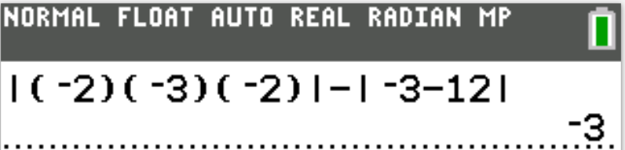
F. No real values of x
G. Only negative values of x
H. Only positive values of x
J. All real values of x except 0
K. All real values of x
Let us test values of real numbers to determine the correct option.
$ \text{Left-Hand Side of the Inequality} \\[3ex] -|-x| \\[3ex] Test:\;\;x = -3 \\[3ex] -|-(-3)| \\[3ex] = -|3| \\[3ex] = -3 \\[3ex] -3 \lt 0 ...works \\[5ex] Test:\;\;x = 0 \\[3ex] -|-0| \\[3ex] = -0 \\[3ex] = 0 \\[3ex] 0 = 0 \\[3ex] 0 \text{is not less than} 0 ...\text{does not work} \\[5ex] Test:\;\;x = 3 \\[3ex] -|-3| \\[3ex] = -3 \\[3ex] -3 \lt 0 ...works \\[5ex] $ All real values of x except 0 does not work.
The correct option is Option J.
After 6 gallons of gasoline are added to the tank, it is $\dfrac{3}{4}$ full.
Gasoline sells for $1.50 per gallon.
If the tank is empty, what would be the cost to fill it $\dfrac{3}{4}$ full?
$ F.\;\; \$6.00 \\[3ex] G.\;\; \$9.00 \\[3ex] H.\;\; \$15.00 \\[3ex] J.\;\; \$18.00 \\[3ex] K.\;\; \$24.00 \\[3ex] $
$ \text{Fraction of the Initial Volume of Gasoline Tank} = \dfrac{3}{8} \\[5ex] \text{6 Gallons of Gasoline Added} \\[3ex] \text{Fraction of New Volume of Gasoline Tank} = \dfrac{3}{4} \\[5ex] \implies \\[3ex] \text{Fraction of the Volume of Gasoline Tank Due to the 6 Gallons of Gasoline} \\[3ex] = \dfrac{3}{4} - \dfrac{3}{8} \\[5ex] = \dfrac{6}{8} - \dfrac{3}{8} \\[5ex] = \dfrac{6 - 3}{8} \\[5ex] = \dfrac{3}{8} \\[5ex] \text{6 Gallons account for } \dfrac{3}{8} \\[5ex] \text{How many gallons accounts for } \dfrac{3}{4}? \\[5ex] $
| Gallons of Gasoline | Fraction of the Volume of Gasoline Tank |
|---|---|
| $6$ | $\dfrac{3}{8}$ |
| $what$ | $\dfrac{3}{4}$ |
$ what \cdot \dfrac{3}{8} = 6 \cdot \dfrac{3}{4} \\[5ex] what \cdot \dfrac{3}{8} \cdot \dfrac{8}{3} = 6 \cdot \dfrac{3}{4} \cdot \dfrac{8}{3} \\[5ex] what = 12\;gallons \\[5ex] 12\;gallons \;\;@\;\; \$1.5\;\;per\;\;gallon \\[3ex] = 12(1.5) \\[3ex] = \$18.00 $
The worth of this investment was $24,000 exactly 21 years after the investment was made.
The worth of the investment exactly 8 years after the investment was made was between:
F.. $0 and $3,000
G. $3,000 and $6,000
H. $6,000 and $9,000
J. $9,000 and $12,000
K. $12,000 and $24,000
Investment doubles in worth every 7 years.
In 21 years:
21 ÷ 7 = 3
This means that it will double in worth 3 times ...over 21 years.
Investment amount is $24,000 in 21 years
So, we have to work backwards to find the investment amount after 8 years.
In working backwards:
We shall divide the investment amount by 2 (rather than multiplying by 2 because we are working backwards).
We shall subtract 7 years from the years (rather than adding 7 years to the years because we are working backwards).
Let us represent this information using a table.
It might make more sense that way.
| Investment Worth ($) | Years |
|---|---|
| 24000 | 21 |
| 24000 ÷ 2 = 12000 | 21 − 7 = 14 |
| 12000 ÷ 2 = 6000 | 14 − 7 = 7 |
The investment amount was $6000 in exactly 7 years.
Ceteris paribus, this implies that the investment amount is between $6000 and $9000 in exactly 8 years after the investment was made.
The length of $\overline{PR}$ is 12 inches, the length of $\overline{QT}$ is 15 inches, $\overline{QR}$ is the same length as $\overline{ST}$, and $\overline{PQ}$ is the same length as $\overline{RS}$.
How many inches long is $\overline{PT}$?
$ A.\;\; 18 \\[3ex] B.\;\; 21 \\[3ex] C.\;\; 24 \\[3ex] D.\;\; 27 \\[3ex] E.\;\; 30 \\[3ex] $
It is highly recommended to represent this information diagrammatically
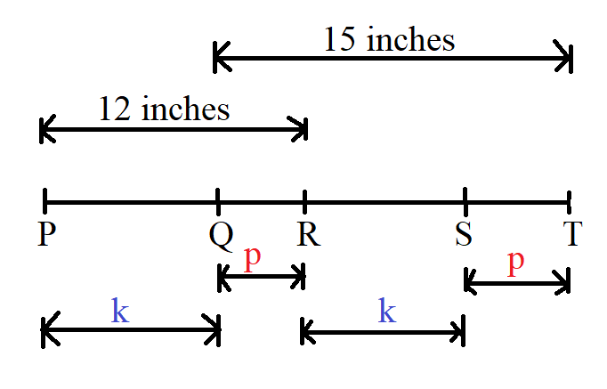
$ Let: \\[3ex] |PQ| = |RS| = k\;inches \\[3ex] |QR| = |ST| = p\;inches \\[3ex] k + p = 12 ...diagram \\[5ex] |PT| = 12 + k + p ...diagram \\[3ex] |PT| = 12 + 12 \\[3ex] |PT| = 24\;inches $
How many two-digit numbers should be on your list?
A. 1
B. 3
C. 5
D. 6
E. 7
For a two-digit number say: xy:
the tens-digit = x
the units digit = y
Positive two-digit numbers are: 10 – 99
For which:
The units digit is larger than the tens digit are:
12 – 19; 23 – 29; 34 – 39; 45 – 49; 56 – 59; 67 – 69; 78, 79, 89
For which:
The sum of the digits is 12 are:
39, 48, 57
There are only 3 numbers in the list.
What is the distance, in centimeters, between T and the midpoint of $\overline{RS}$?
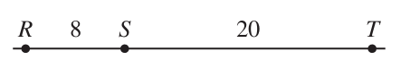
$ A.\;\; 14 \\[3ex] B.\;\; 18 \\[3ex] C.\;\; 20 \\[3ex] D.\;\; 24 \\[3ex] E.\;\; 28 \\[3ex] $
$ \text{Midpoint of }\overline{RS} = \dfrac{1}{2} \cdot 8 = 4 \\[5ex] \text{Distance between T and the midpoint of }\overline{RS} \\[3ex] = 4 + \overline{ST} \\[3ex] = 4 + 20 \\[3ex] = 24 $
$ F.\;\; -13 \\[3ex] G.\;\; -7 \\[3ex] H.\;\; 7 \\[3ex] J.\;\; 13 \\[3ex] K.\;\; 120 \\[3ex] $
$ p = 40 \\[3ex] q = -12 \\[3ex] p + q \\[3ex] = 40 + (-12) \\[3ex] = 40 - 12 \\[3ex] = 28 \\[5ex] -4 \cdot what = 28 \\[3ex] what = \dfrac{28}{-4} \\[5ex] what = -7 $
They started with 7 gallons of paint.
On the first day, Ben used $\dfrac{3}{4}$ gallon of paint and Shawnee used $3\dfrac{1}{2}$ gallons of paint.
How many gallons of paint were left when they completed their first day of painting?
$ A.\;\; 2\dfrac{3}{4} \\[5ex] B.\;\; 3\dfrac{1}{2} \\[5ex] C.\;\; 3\dfrac{3}{4} \\[5ex] D.\;\; 4\dfrac{1}{4} \\[5ex] E.\;\; 6\dfrac{1}{4} \\[5ex] $
$ \underline{\text{Given: }} 7 \text{ gallons of paint} \\[5ex] \underline{\text{Used}} \\[3ex] \dfrac{3}{4} + 3\dfrac{1}{2} \\[5ex] = \dfrac{3}{4} + \dfrac{7}{2} \\[5ex] = \dfrac{3 + 14}{4} \\[5ex] = \dfrac{17}{4} \\[5ex] \underline{\text{Remaining}} \\[3ex] 7 - \dfrac{17}{4} \\[5ex] = \dfrac{28}{4} - \dfrac{17}{4} \\[5ex] = \dfrac{28 - 17}{4} \\[5ex] = \dfrac{11}{4} \\[5ex] = 2\dfrac{3}{4}\;gallons. $
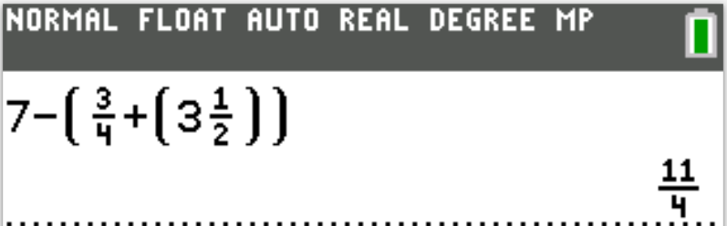
For each additional hour he works in a week, Ken is paid 2 times his regular hourly wage.
Ken worked 44 hours this week.
What was his pay for this week before taxes and benefits were deducted?
$ F.\;\; \$630 \\[3ex] G.\;\; \$660 \\[3ex] H.\;\; \$720 \\[3ex] J.\;\; \$930 \\[3ex] K.\;\; \$1,320 \\[3ex] $
$ \text{44 hours this week} \\[5ex] \underline{Regular} \\[3ex] \text{Regular work hours} = 40\;hours \\[3ex] \text{Regular hourly pay} = \$15 \\[3ex] \text{40 hours @ \$15 per hour} = 40(15) = \$600 \\[5ex] \underline{Overtime} \\[3ex] \text{Ovetime work hours} = 44 - 40 = 4\;hours \\[3ex] \text{Overtime hourly pay} = 2(15) = \$30 \\[3ex] \text{4 hours @ \$30 per hour} = 4(30) = \$120 \\[5ex] \text{Total pay} = \$600 + \$120 = \$720 $
$ \dfrac{m}{n - 1}, \;\;\; \dfrac{m}{n}, \;\;\; \dfrac{m}{n + 1}, \;\;\; \dfrac{m - 1}{n} \\[5ex] $ If it can be determined, which of the 4 expressions must have the greatest value?
$ A.\;\; \dfrac{m}{n - 1} \\[5ex] B.\;\; \dfrac{m}{n} \\[5ex] C.\;\; \dfrac{m}{n + 1} \\[5ex] D.\;\; \dfrac{m - 1}{n} \\[5ex] E.\;\;\text{Cannot be determined from the given information} \\[3ex] $
Let us test values to determine the correct option
| Test: | $m = 3, n = 3$ | $m = 3, n = 4$ |
|---|---|---|
| $\dfrac{m}{n - 1}$ | $ \dfrac{3}{3 - 1} \\[5ex] 1.5 $ | $ \dfrac{3}{4 - 1} \\[5ex] 1 $ |
| $\dfrac{m}{n}$ | $ \dfrac{3}{3} \\[5ex] 1 $ | $ \dfrac{3}{4} \\[5ex] 0.75 $ |
| $\dfrac{m}{n + 1}$ | $ \dfrac{3}{3 + 1} \\[5ex] 0.75 $ | $ \dfrac{3}{4 + 1} \\[5ex] 0.6 $ |
| $\dfrac{m - 1}{n}$ | $ \dfrac{3 - 1}{3} \\[5ex] 0.6\bar{6} $ | $ \dfrac{3 - 1}{4} \\[5ex] 0.5 $ |
| Compare: | $1.5 \gt 1 \gt 0.75 \gt 0.6\bar{6}$ | $1 \gt 0.75 \gt 0.6 \gt 0.5$ |
| The expression that has the greatest value is $\dfrac{m}{n - 1}$ | ||
A. −31
B. −27
C. −19
D. 19
E. 27
$ |-4| - |6 - 29| \\[3ex] 4 - |-23| \\[3ex] 4 - 23 \\[3ex] -19 $
The 1st reduced price was decreased by 20% and then that 2nd reduced price was decreased by 50%.
The price that resulted from these 3 decreases was what percent less than the original price?
$ F.\;\; 10\% \\[3ex] G.\;\; 32\% \\[3ex] H.\;\; 68\% \\[3ex] J.\;\; 90\% \\[3ex] K.\;\; 98\% \\[3ex] $
Let the original price of the item = p
Original price: reduced by 20%
20% of p
= 0.2(p)
= 0.2p
p decreased by 20%
= 20% off p
= p − 0.2p
= 0.8p
1st reduced price: reduced by 20%
20% of 0.8p
= 0.2(0.8p)
= 0.16p
0.8p decreased by 20%
= 20% off 0.8p
= 0.8p − 0.16p
= 0.64p
2nd reduced price: reduced by 50%
50% of 0.64p
= 0.5(0.64p)
= 0.32p
0.64p decreased by 50%
= 50% off 0.64p
= 0.64p − 0.32p
= 0.32p
The price that resulted from these 3 decreases was what percent less than the original price?
0.32p is what percent less than p?
Let's do it this way:
0.32p is what number less than p?
p − 0.32p = 0.68p
0.68p is what percent of p?
$ \dfrac{is}{of} = \dfrac{what}{100} ...Percent-Proportion \\[5ex] \dfrac{0.68p}{p} = \dfrac{what}{100} \\[5ex] 0.68 = \dfrac{what}{100} \\[5ex] what = 0.68(100) \\[3ex] what = 68\% \\[3ex] $
The answer is 68%
0.32p is 68% less than p
Student: Mr. C, is there a way we can attempt this question without using a variable?
The question did not ask us to find the original price.
Do you not think it's much better to just assume that the original price is something like a dollar?
Then, work from there.
Teacher: Good observation. We can do it that way.
Let's do it.
Let the original price of the item = $1.00
Original price: reduced by 20%
20% of 1
= 0.2(1)
= 0.2
1 decreased by 20%
= 20% off 1
= 1 − 0.2
= 0.8
1st reduced price: reduced by 20%
20% of 0.8
= 0.2(0.8)
= 0.16
0.8 decreased by 20%
= 20% off 0.8
= 0.8 − 0.16
= 0.64
2nd reduced price: reduced by 50%
50% of 0.64
= 0.5(0.64)
= 0.32
0.64 decreased by 50%
= 50% off 0.64
= 0.64 − 0.32
= 0.32
The price that resulted from these 3 decreases was what percent less than the original price?
0.32 is what percent less than 1?
Let's do it this way:
0.32 is what number less than 1?
1 − 0.32 = 0.68
0.68 is what percent of 1?
$ \dfrac{is}{of} = \dfrac{what}{100} ...Percent-Proportion \\[5ex] \dfrac{0.68}{1} = \dfrac{what}{100} \\[5ex] what = 0.68(100) \\[3ex] what = 68\% \\[3ex] $
The answer is 68%
0.32p is 68% less than p
$ A.\;\; -29\sqrt{6} \\[3ex] B.\;\; -7\sqrt{6} \\[3ex] C.\;\; -2\sqrt{6} \\[3ex] D.\;\; -\sqrt{30} \\[3ex] E.\;\; -\sqrt{1, 296} \\[3ex] $
$ 4\sqrt{24} - 5\sqrt{54} \\[3ex] 4 \cdot \sqrt{4 \cdot 6} - 5 \cdot \sqrt{9 \cdot 6} \\[3ex] 4 \cdot \sqrt{4} \cdot \sqrt{6} - 5 \cdot \sqrt{9} \cdot \sqrt{6} \\[3ex] 4 \cdot 2 \cdot \sqrt{6} - 5 \cdot 3 \cdot \sqrt{6} \\[3ex] 8\sqrt{6} - 15\sqrt{6} \\[3ex] -7\sqrt{6} $
They have decided to spend $225 for a light and sound show, $600 for refreshments, and $75 for decorations.
These are the only expenses.
Given that the Student Council estimates 400 students will attend the dance, what should be the price, per student, for admission to the dance if the Student Council wants to raise as close as possible to $500 after paying expenses?
$ A.\;\; \$0.80 \\[3ex] B.\;\; \$1.25 \\[3ex] C.\;\; \$1.60 \\[3ex] D.\;\; \$2.25 \\[3ex] E.\;\; \$3.50 \\[3ex] $
Total Expenses = $225 + $600 + $75 = $900
Expected Profit = $500
Expected Income = $900 + $500 = $1400
Expected Number of students = 400
Price per student to generate expected income = 1400 ÷ 400 = $3.50
Which of the 3 expressions below must be equal to an even number?
$ \dfrac{n}{2}, \;\;\;2n,\;\;\; \sqrt{n} \\[5ex] A.\;\; \dfrac{n}{2}\;only \\[5ex] B.\;\; 2n\;only \\[3ex] C.\;\; \sqrt{n}\;only \\[3ex] D.\;\; 2n \;\;and\;\; \sqrt{n}\;only \\[3ex] E.\;\; \dfrac{n}{2}, \;\;\;2n,\;\;\; \sqrt{n} \\[5ex] $
In the context of the question, the only even numbers are the multiples of 2.
This is $2n$
For $\sqrt{n}$, the square root of several even numbers are decimals (not even numbers.) Example: $\sqrt{6}$ is not an even number.
For $\dfrac{n}{2}$, some even-number dividends give odd-number quotients when divided by 2.
Examples are 10, 14, etc.
$10 \div 2 = 5$
5 is not an even number.
$ F.\;\; 20 \\[3ex] G.\;\; 35 \\[3ex] H.\;\; 39 \\[3ex] J.\;\; 42 \\[3ex] K.\;\; 46 \\[3ex] $
Due to the fact that one minute is allocated to each question on the ACT (60 minutes for 60 questions), it is better to check the solution to this question by their answer options.
So, let us check and eliminate until we get the answer.
$ \underline{Option\;F} \\[3ex] 20 \div 7 = 2 \;R\; 6 \; \\[3ex] \text{remainder is 6, not 4} \\[3ex] NEXT \\[5ex] \underline{Option\;G} \\[3ex] 35 \div 7 = 5 \;R\; 0 \\[3ex] \text{remainder is 0, not 4} \\[3ex] NEXT \\[5ex] \underline{Option\;H} \\[3ex] 39 \div 7 = 5 \;R\; 4 \checkmark \\[3ex] 39 \div 6 = 6 \;R\; 3 \; \checkmark \\[3ex] STOP \\[3ex] $ Option H is the correct answer.
It is less than the remaining choices even if those choices work.
Student: I do not want to make any assumptions, however, I am beginning to notice a pattern with Option H.
Similar questions in Numbers (7.) and (17.) has option H. as the answer.
Is there another way to do this question without checking by the answer options?
Teacher: Yes, we can do it: Modular Arithmetic
However, I think it takes more than a minute to do.
$ Let: \\[3ex] dividend = d \\[3ex] quotient = q \\[3ex] 1st:\;\; \text{Remainder of 4 when divided by 7} \\[3ex] d \equiv 4 \mod 7...cong.(1) \\[5ex] 2nd:\;\; \text{Remainder of 3 when divided by 6} \\[3ex] d \equiv 3 \mod 6 ...cong.(2) \\[5ex] \implies \\[3ex] d = 6q + 3 ...eqn.(1) \\[3ex] Substitute\;\;eqn.(1) \;\;for\;\;d\;\;in\;\;cong.(1) \\[3ex] 6q + 3 \equiv 4 \mod 7 \\[3ex] \text{Test positive integers for q beginning from the first positive integer} \\[3ex] 6(1) + 3 = 9 \equiv 2 \mod 7...Not\;\;4 \\[3ex] 6(2) + 3 = 15 \equiv 1 \mod 7...Not\;\;4 \\[3ex] 6(3) + 3 = 21 \equiv 0 \mod 7...Not\;\;4 \\[3ex] 6(4) + 3 = 27 \equiv 6 \mod 7...Not\;\;4 \\[3ex] 6(5) + 3 = 33 \equiv 5 \mod 7 \;\checkmark \\[3ex] 6(6) + 3 = 39 \equiv 4 \mod 7 \;\checkmark \\[3ex] \implies \\[3ex] d = 39 $
What is scientific notation for this number?
$ F.\;\; 6.306 \times 10^{a - 2} \\[4ex] G.\;\; 6.306 \times 10^{a - 1} \\[4ex] H.\;\; 6.306 \times 10^a \\[4ex] J.\;\; 6.306 \times 10^{a + 1} \\[4ex] K.\;\; 6.306 \times 10^{a + 2} \\[4ex] $
$ 630.6 \times 10^a \\[4ex] = \dfrac{630.6}{100} \times 100 \times 10^a \\[6ex] = \dfrac{630.6}{10^2} \times 10^2 \times 10^a \\[6ex] = 6.306 \times 10^{2 + a} \\[4ex] = 6.306 \times 10^{a + 2} $
$ A.\;\; -42 \\[3ex] B.\;\; -6 \\[3ex] C.\;\; 6 \\[3ex] D.\;\; 11 \\[3ex] E.\;\; 18 \\[3ex] $
$ x = 5 \\[3ex] y = 3 \\[3ex] z = -6 \\[5ex] x + y - z \\[3ex] = 5 + 3 - (-6) \\[3ex] = 5 + 3 + 6 \\[3ex] = 14 \\[5ex] y + z \\[3ex] = 3 + (-6) \\[3ex] = 3 - 6 \\[3ex] = -3 \\[5ex] (x + y - z)(y + z) \\[3ex] = (14)(-3) \\[3ex] = -42 $
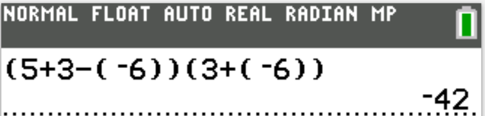
The table below gives the number of snacks per package and the price per package.
| Snack type | Snacks per package | Price per package |
|---|---|---|
|
Granola bars Juice boxes Apples |
3 4 5 |
$2.50 $3.00 $4.50 |
What is the minimum total price of the snacks, all bought in whole packages, Coach Shannon buys so that each of the 15 girls on the team gets at least 1 snack of each type?
$ F.\;\; \$30.00 \\[3ex] G.\;\; \$35.00 \\[3ex] H.\;\; \$38.00 \\[3ex] J.\;\; \$42.00 \\[3ex] K.\;\; \$50.00 \\[3ex] $
15 girls on the soccer team
Each girl should get at least 1 snack of each type
Granola: 3 snacks per package; $2.50 per package
15 ÷ 3 = 5
5 packages of Granola are needed
This costs: $5(\$2.50) = \$12.50$
Juice boxes: 4 snacks per package; $3.00 per package
15 ÷ 4 = 3.75
This is not a whole number...because each girl will get at least 1 snack
Round it up
4 packages of Juice boxes are needed
This costs: $5(\$3.00) = \$12.00$
Apples: 5 snacks per package; $4.50 per package
15 ÷ 5 = 3
3 packages of Apples are needed
This costs: $3(\$4.50) = \$13.50$
The minimum total price of the snacks
= $12.50 + $12.00 + $13.50
= $38.00
Mary and Haloa decide to make the cake together.
Mary has $\dfrac{1}{3}$ cup of flour and Haloa has $\dfrac{1}{4}$ cup of flour.
How many more cups of flour do they need to make the cake?
$ A.\;\; \dfrac{1}{24} \\[5ex] B.\;\; \dfrac{2}{7} \\[5ex] C.\;\; \dfrac{19}{56} \\[5ex] D.\;\; \dfrac{13}{24} \\[5ex] E.\;\; \dfrac{17}{24} \\[5ex] $
$ \underline{\text{Cake recipe: Cup of Flour}} \\[3ex] Requires:\;\;\dfrac{5}{8} \\[5ex] Already\;\;Has:\;\; \dfrac{1}{3} + \dfrac{1}{4} \\[5ex] Needs:\;\; \dfrac{5}{8} - \left(\dfrac{1}{3} + \dfrac{1}{4}\right) \\[5ex] = \dfrac{5}{8} - \dfrac{1}{3} - \dfrac{1}{4} \\[5ex] = \dfrac{15}{24} - \dfrac{8}{24} - \dfrac{6}{24} \\[5ex] = \dfrac{15 - 8 - 6}{24} \\[5ex] = \dfrac{1}{24} $
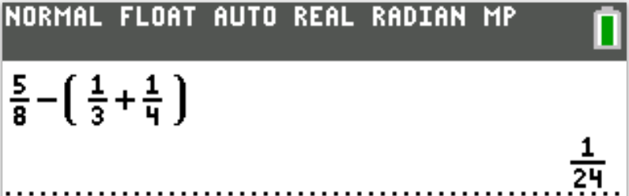
Each point has 2 integer coordinates.
The x-coordinate is the number of hours the student spent studying for a retake test, and the y-coordinate is the change in score from the original test to the retake test.
Noel drew the line shown through 2 data points to help predict future changes in score.
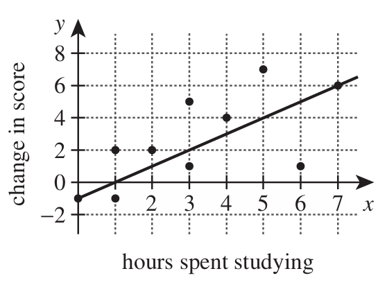
Both the original and the retake tests had a maximum score of 50.
Among the 10 students who took the retake test, Jin studied for the greatest number of hours.
What is the number of percentage points Jin’s score increased?
$ F.\;\; 7\% \\[3ex] G.\;\; 12\% \\[3ex] H.\;\; 13\% \\[3ex] J.\;\; 16\% \\[3ex] K.\;\; 30\% \\[3ex] $
For Jin: the point is (x, y) = (7, 6)
He spent 7 hours on studying
The change in score = +6
Maximum score = 50
$ \text{Percentage Points Increase} = \dfrac{\text{Increase}}{\text{Maximum Score}} * 100 \\[5ex] = \dfrac{6}{50} * 100 \\[5ex] = 12\% $
$ A.\;\; 2.16 \times 10^{-7} \\[3ex] B.\;\; 2.16 \times 10^{-6} \\[3ex] C.\;\; 2.4 \times 10^{-8} \\[3ex] D.\;\; 2.4 \times 10^{-7} \\[3ex] E.\;\; 6.9 \times 10^{-7} \\[3ex] $
$ 3(0.00000072) \\[3ex] 3 \cdot 7.2 \cdot 10^{-7} \\[4ex] 21.6 * 10^{-7} \\[4ex] 2.16 * 10^{1} * 10^{-7} \\[4ex] 2.16 * 10^{1 + (-7)}...Law\;1...Exp \\[4ex] 2.16 * 10^{1 - 7} \\[4ex] = 2.16 * 10^{-6} $
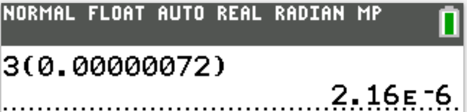
$ 2.16E-6 \\[3ex] = 2.16 * 10^{-6} $
Which of the following mathematical statements about $\sqrt{10}$ is true?
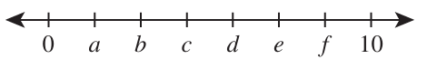
$ F.\;\; c = \sqrt{10} \\[3ex] G.\;\; d = \sqrt{10} \\[3ex] H.\;\; b \lt \sqrt{10} \lt c \\[3ex] J.\;\; c \lt \sqrt{10} \lt d \\[3ex] K.\;\; d \lt \sqrt{10} \lt e \\[3ex] $
$ minimum = 0 \\[3ex] maximum = 10 \\[3ex] range = 10 - 0 = 10 \\[3ex] 7\; segments \implies 10 \\[3ex] 1\; segment = \dfrac{10}{7} \\[5ex] 1\;segment = 1.428571429 \\[3ex] \implies \\[3ex] a = 1.428571429 \\[3ex] b = 2(1.428571429) = 2.857142857 \\[3ex] c = 3(1.428571429) = 4.285714286 \\[5ex] \sqrt{10} = 3.16227766 \\[3ex] 2.857142857 \lt 3.16227766 \lt 4.285714286 \\[3ex] b \lt \sqrt{10} \lt c $
$ |-3| + |-5|(7 - 3) \\[3ex] = 3 + 5(4) \\[3ex] = 3 + 20 \\[3ex] = 23 $
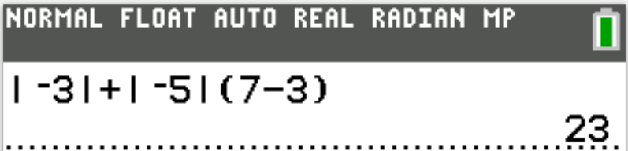
$ F.\;\; 5\;a.m. \\[3ex] G.\;\; 5\;p.m. \\[3ex] H.\;\; 10\;a.m. \\[3ex] J.\;\; 10\;p.m. \\[3ex] K.\;\; 12\;p.m. \\[3ex] $
Let's assume it is 3 p.m
24 hours later, it will be 3 p.m
Let's see how many 24's are in 230
230 ÷ 24 = 9.583333333
24 * 9 = 216
So, in 216 hours later, it will be 3 p.m
But we have a remainder
Remainder = 230 − 216 = 14 hours
So, we can rephrase this question as:
If it is 3 p.m now, what time is it 14 hours later?
From 3 p.m to 12 midnight is 9 hours (because 12 − 3 = 9)
Remaining hours = 14 − 9 = 5 hours
5 hours from 12 midnight is 5 a.m
Therefore, exactly 230 hours after 3 p.m is 5 a.m
They bought the following items to sell: 1,000 pencils at a cost of 5¢ each; 500 pens at 30¢ each; and 500 packages of notebook paper at 50¢ per package.
Your class charged these prices: pencils 10¢ each; pens 50¢ each; and notebook paper $1.00 per package.
At the end of the school year, your class had sold 980 pencils, 462 pens, and 459 packages of notebook paper.
How much profit did your class make on this project?
(Note: The class donated the unsold items to a youth shelter.)
$ A.\;\; \$450.00 \\[3ex] B.\;\; \$400.00 \\[3ex] C.\;\; \$370.90 \\[3ex] D.\;\; \$367.10 \\[3ex] E.\;\; \$338.00 \\[3ex] $
$ 5¢ = \$\dfrac{5}{100} = \$0.05 \\[5ex] 10¢ = \$\dfrac{10}{100} = \$0.1 \\[5ex] 30¢ = \$\dfrac{30}{100} = \$0.3 \\[5ex] 50¢ = \$\dfrac{50}{100} = \$0.5 \\[5ex] \underline{\text{Cost Price}} \\[3ex] \text{1000 pencils } @ \text{ 5¢ each} = 1000(0.05) = \$50 \\[3ex] \text{500 pens } @ \text{ 30¢ each} = 500(0.3) = \$150 \\[3ex] \text{500 packages } @ \text{ 50¢ each} = 500(0.5) = \$250 \\[3ex] \text{Total Cost Price} = \$450 \\[5ex] \underline{\text{Selling Price}} \\[3ex] \text{980 pencils } @ \text{ 10¢ each} = 980(0.1) = \$98 \\[3ex] \text{462 pens } @ \text{ 50¢ each} = 462(0.5) = \$231 \\[3ex] \text{459 packages } @ \$1 \text{ each} = 459(1) = \$459 \\[3ex] \text{Total Selling Price} = \$788 \\[5ex] \text{Profit} = \text{Total Selling Price} - \text{Total Cost Price} \\[3ex] = \$788 - \$450 \\[3ex] = \$338 $
She scored at least 10 points per game in each of the 5 games.
What is the maximum number of points per game she could have scored in any 1 of the 5 games?
$ A.\;\; 12 \\[3ex] B.\;\; 14 \\[3ex] C.\;\; 15 \\[3ex] D.\;\; 20 \\[3ex] E.\;\; 50 \\[3ex] $
12 points per game for 5 games = 12(5) = 60 points
Let the maximum number of points per game in any 1 game = p
Remove 1 game ⇒ 5 − 1 = 4
At least 10 points per game ⇒ ≥10 points
This implies that the minimum total points for 4 games = 10(4) = 40 points
So:
40 + p = 60
p = 60 − 40
p = 20
The maximum number of points in any 1 game is 20 points.
Jocelyn wants to become a member of 1 of 3 gyms.
The onetime sign-up fee, the monthly fee, and the late fee for each gym are shown in the table below.
Monthly fees are due on the 1st day of each month for each gym.
A onetime late fee is added to the monthly fee if the monthly fee is paid after the 1st day of that particular month.
Felix, a coworker of Jocelyn’s, became a member of PowerPeople on March 1.
| Gym | Sign-up fee | Monthly fee | Late fee |
|---|---|---|---|
|
PowerPeople FirmFactory TrimTime |
$35 $ 0 $25 |
$50 $65 $60 |
$ 5 $10 $10 |
$ F.\;\; \$85 \\[3ex] G.\;\; \$145 \\[3ex] H.\;\; \$180 \\[3ex] J.\;\; \$205 \\[3ex] K.\;\; \$215 \\[3ex] $
Jocelyn → TrimTime Gym
Sign-up fee = $25
July 1, August 1, September 1 → 3 months
$60 monthly fee for 3 months = 60(3) = $180
Total amount Jocelyn will have paid to the gym by September 2
= 25 + 180 = $205
He will make his next gym payment on October 4.
What total amount must Felix pay on October 4 so that his gym account will be paid in full?
$ A.\;\; \$50 \\[3ex] B.\;\; \$55 \\[3ex] C.\;\; \$70 \\[3ex] D.\;\; \$75 \\[3ex] E.\;\; \$90 \\[3ex] $
Felix → PowerPeople Gym
Payment on October 4
Sign-up fee = Not Applicable
Monthly fee = $50
Late fee (because it was paid after the 1st day of the month) = $ 5
Total amount Felix pay on October 4 so that his gym account will be paid in full
= 50 + 5 = $55
What is the sign-up fee for Good-As-New?
$ F.\;\; \$8 \\[3ex] G.\;\; \$15 \\[3ex] H.\;\; \$20 \\[3ex] J.\;\; \$30 \\[3ex] K.\;\; \$58 \\[3ex] $
$ \text{Mean of all the sign-up fees} \\[3ex] = \dfrac{35 + 0 + 25}{3} \\[5ex] = \dfrac{60}{3} \\[5ex] = \$20 $
The first of July in those years will be on:
F. Tuesday.
G. Wednesday.
H. Thursday.
J. Saturday.
K. Sunday.
31 days in July
Exactly 4 Mondays and 4 Fridays
7 days in a week
7 × 4 = 28
7 × 5 = 35 ...this is more than 31
Hence, the maximum for it not to repeat after 4 times is 28.
We are now focused on the 4th day.
So, for this to work, the 4th day must be a Monday or a Friday.
This is to make sure that the number of occurrences is exactly 4 times in the month of July
If the 4th is a Monday
3rd was Sunday
2nd was Saturday
1st was Friday
This will not work because Friday would occur more than 4 times.
If the 4th is a Friday
3rd was Thursday
2nd was Wednesday
1st was Tuesday
This arrangement works.
Ths first of July in those years will be on Tuesday.
Lately, the trip has been taking 15 minutes longer each way because of road construction.
What is her average speed, in miles per hour, for a round-trip with the construction delays?
$ F.\;\; 30 \\[3ex] G.\;\; 35 \\[3ex] H.\;\; 40 \\[3ex] J.\;\; 45 \\[3ex] K.\;\; 50 \\[3ex] $
$ s \hspace{3em} t \hspace{3em} d \\[3ex] speed \cdot time = distance \\[5ex] \underline{\text{Round-trip: Without construction delays}} \\[3ex] speed = 60\;mph \\[3ex] time = 1\;hour \\[3ex] distance = ? \\[3ex] distance = speed \cdot time \\[3ex] distance = 60(1) = 60\;miles \\[5ex] \underline{\text{Round-trip: With construction delays}} \\[3ex] distance = 60\;miles ...\text{same distance} \\[3ex] \text{15 minutes each way} = 2(15) = \text{30 minutes round trip} \\[3ex] 30\;minutes = 30\;minutes \cdot \dfrac{1\;hour}{60\;minutes} = 0.5\;hour \\[5ex] time = \text{1 hour 30 minutes} = 1.5\;hours ...\text{more time because of the construction delays} \\[3ex] \text{average speed} = ? \\[3ex] \text{average speed} = \dfrac{distance}{time} \\[5ex] = \dfrac{60}{1.5} \\[5ex] = 40\;mph $
The solution contained 80% water.
The student added 50 mL of 100% water to this solution.
What is the percent of acid in the new solution?
$ A.\;\; 6\dfrac{2}{3}\% \\[5ex] B.\;\; 10\% \\[3ex] C.\;\; 26\dfrac{2}{3}\% \\[5ex] D.\;\; 33\dfrac{1}{3}\% \\[5ex] E.\;\; 50\% \\[3ex] $
25mL of a solution of water and acid contains 80% water
100% – 80% = 20%
This implies that the solution contains 20% acid
So, the 25mL of the acid and water solution contains 80% water and 20% acid
Let us find the volume of acid in that 25mL solution
Volume of acid = 20% of 25mL
= $\dfrac{20}{100} \cdot 25 = 5\;mL$
So, the 25mL of the acid and water solution contains 5mL acid
It contains 20mL water, however, we are interested in the acid
50mL of 100% water was added to the 25mL acid and water solution
This gives a new solution
Volumes can be added
50mL + 25mL = 75mL
This makes the volume of the acid and water solution to 75mL
However, the concentration of the water increases and the concentration of the acid decreases
But we are interested in the concentration of the acid
So, we now have 5mL of acid in 75mL acid and water solution
Hence, the concentration of the acid in this new solution
$ = \dfrac{5\;mL}{75\;mL} \cdot 100 \\[5ex] = \dfrac{100}{15} \\[5ex] = \dfrac{20}{3} \\[5ex] = 6\dfrac{2}{3}\% $
Jorge, an employee of the company, traveled exactly 120 miles on Monday and exactly 100 miles on Tuesday using his personal vehicle for company travel.
For these 2 days, what was the amount of Jorge’s reimbursement?
$ F.\;\; \$54.50 \\[3ex] G.\;\; \$63.40 \\[3ex] H.\;\; \$97.90 \\[3ex] J.\;\; \$107.90 \\[3ex] K.\;\; \$117.90 \\[3ex] $
$ \underline{\text{Monday Travel}} \\[3ex] \text{Daily rate} = \$10 \\[3ex] \text{Mileage rate} = \text{120 miles } @\; \$0.445 \text{ per mile} = 120(0.445) = \$53.4 \\[5ex] \underline{\text{Tuesday Travel}} \\[3ex] \text{Daily rate} = \$10 \\[3ex] \text{Mileage rate} = \text{100 miles } @\; \$0.445 \text{ per mile} = 100(0.445) = \$44.5 \\[5ex] \underline{\text{2 Days Travel}} \\[3ex] \text{Reimbursement Amount} = 10 + 53.4 + 10 + 44.5 \\[3ex] = \$117.90 $
What is the least number of its remaining 14 games the team must win to finish the season winning more than 50% of all the team’s games?
$ F.\;\; 3 \\[3ex] G.\;\; 6 \\[3ex] H.\;\; 7 \\[3ex] J.\;\; 8 \\[3ex] K.\;\; 10 \\[3ex] $
1st: Let us find the total number of games
11 wins + 8 losses + 0 ties + 14 remaining games = 33 games
50% of 33 games = 0.5(33) = 16.5 games...(though we cannot have a fractional game)
More than 50% of all the team’s games = 17 games
Number of wins in games already played = 11 wins
Number of remaining games to get to 17 wins = 17 − 11 = 6 games
$ F.\;\; 2 \\[3ex] G.\;\; 4 \\[3ex] H.\;\; 8 \\[3ex] J.\;\; 32 \\[3ex] K.\;\; 64 \\[3ex] $
The maximum value of a quotient is when the numerator is the biggest and the denominator is the smallest.
You may try it with some values to confirm.
This implies that we have to use the greatest value of x and the least value of y in the set.
$ \underline{\text{Both Sets}} \\[3ex] \text{greatest value of } x = 1 \\[3ex] \text{least value of } y = \dfrac{1}{8} \\[5ex] \dfrac{x}{y^2} \\[5ex] = \dfrac{1}{\left(\dfrac{1}{8}\right)^2} \\[7ex] = 1 \div \dfrac{1}{64} \\[5ex] = 1 \cdot 64 \\[3ex] = 64 \\[3ex] $ Student: Mr. C, for questions like this, can I just guess that the answer is 64 because it is the greatest number in the options?
Teacher: Yes, you may...only if you do not have much time left
I recommend that you solve it if you have time, but then guess rather than leave any question blank.
Student: I'm not sure you understand my question.
Okay, let me put it this way: is it possible for ACT to include a number greater than 64 in the options?
Teacher: I think it is possible.
But let's attempt more questions like this and see.
Let's solve more past questions and if we notice a trend (where the maximum answer in the option is always the correct answer), then we can decide what to do.
Until then, I recommend you solve it.
A trip from Jerrica’s house to school and back is 6 miles.
Gas costs $5 per gallon.
Suppose Jerrica rides her bike to and from school for 10 school days.
How much money will Jerrica save on gas by not driving to and from school those days?
$ A.\;\; \$3 \\[3ex] B.\;\; \$6 \\[3ex] C.\;\; \$15 \\[3ex] D.\;\; \$24 \\[3ex] E.\;\; \$30 \\[3ex] $
Trip
Day trip: House (to and from) School = 6 miles
10 school days
6 miles per day for 10 school days = 6(10) = 60 miles
Gallons of Gas
20 miles on 1 gallon of gas
60 miles → ?
60 × 1 = 60
60 ÷ 20 = 3 gallons
Cost of Gas
$5 per gallon
3 gallons @ $5 per gallon
= 3(5)
= $15
$ A.\;\; \dfrac{13}{8} \\[5ex] B.\;\; \dfrac{13}{16} \\[5ex] C.\;\; \dfrac{5}{24} \\[5ex] D.\;\; \dfrac{1}{32} \\[5ex] E.\;\; \dfrac{13}{32} \\[5ex] $
$ \text{Compare to Midpoint Formula in Geometry} \\[3ex] value_1 = \dfrac{3}{8} \\[5ex] value_2 = \dfrac{7}{16} \\[5ex] \text{Midvalue} = \dfrac{value_1 + value_2}{2} \\[5ex] \left(\dfrac{3}{8} + \dfrac{7}{16}\right) \div 2 \\[5ex] = \left(\dfrac{6}{16} + \dfrac{7}{16}\right) \div \dfrac{2}{1} \\[5ex] = \dfrac{13}{16} \cdot \dfrac{1}{2} \\[5ex] = \dfrac{13}{32} $
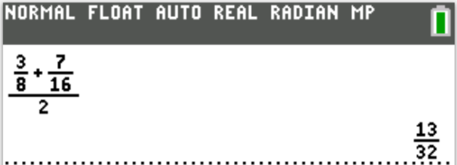
$ F.\;\; \pi \\[3ex] G.\;\; 3\dfrac{1}{3} \\[5ex] H.\;\; 2.193876 \\[3ex] J.\;\; \sqrt{144} \\[3ex] K.\;\; 4 \\[3ex] $
An irrational number is a number that cannot be expressed as a fraction, terminating (exact) decimal, or repeating decimal.
Analyzing the options:
Option F: π is an irrational number because it is non-terminating (not an exact decimal) and it is non-repeating.
This is the correct answer.
The other options are either fractions: Option G. (or can be expressed as a fraction: Option J. and Option K.), exact (terminating) decimals: Option H., or repeating decimals (or can be expressed as repeating decimals: Option G.).
Both pieces are to be cut from a single board 72 inches long.
Together, the 2 cuts subtract a total of $\dfrac{1}{8}$ inch.
What length of board is left over, in inches?
$ F.\;\; 8\dfrac{1}{4} \\[5ex] G.\;\; 8\dfrac{3}{4} \\[5ex] H.\;\; 8\dfrac{13}{16} \\[5ex] J.\;\; 9\dfrac{27}{80} \\[5ex] K.\;\; 9\dfrac{3}{4} \\[5ex] $
Length of single board = 72 inches
Length of 1st piece to be cut from the single board = $35\dfrac{5}{8}$ inches
Length of 2nd piece to be cut from the single board = $27\dfrac{1}{2}$ inches
Length of the 2 cuts (kerf or offcut of the 2 cuts) = $\dfrac{1}{8}$ inch
$ \underline{\text{Total Length of 2 pieces and 2 cuts}} \\[3ex] 35\dfrac{5}{8} + 27\dfrac{1}{2} + \dfrac{1}{8} \\[5ex] = 35 + \dfrac{5}{8} + 27 + \dfrac{1}{2} + \dfrac{1}{8} \\[5ex] = 35 + 27 + \dfrac{5}{8} + \dfrac{4}{8} + \dfrac{1}{8} \\[5ex] = 62 + \dfrac{10}{8} \\[5ex] = 62 + \dfrac{5}{4} \\[5ex] = 62 + 1\dfrac{1}{4} \\[5ex] = 62 + 1 + \dfrac{1}{4} \\[5ex] = 63 + \dfrac{1}{4}\;inches \\[5ex] \underline{\text{Left Over}} \\[3ex] Remaining = 72 - \left(63 + \dfrac{1}{4}\right) \\[5ex] = 72 - 63 - \dfrac{1}{4} \\[5ex] = 9 - \dfrac{1}{4} \\[5ex] = 8\dfrac{3}{4}\;inches $
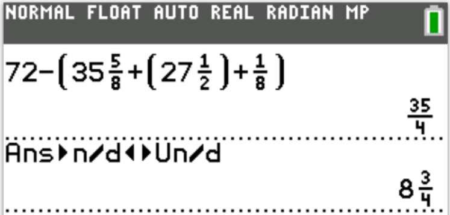
The students’ scores were recorded as integers.
The table below shows the frequency and cumulative frequency of test scores in certain ranges.
| Range of scores | Frequency | Cumulative Frequency |
|
50 – 59 60 – 69 70 – 79 80 – 89 90 – 100 |
6 16 16 12 10 |
6 22 38 50 60 |
To be classified as proficient, a student must score 70 or higher on the test.
What is the ratio of the number of students who were classified as proficient to the number who were NOT classified as proficient?
$ F.\;\; 19:3 \\[3ex] G.\;\; 19:11 \\[3ex] H.\;\; 25:11 \\[3ex] J.\;\; 30:11 \\[3ex] K.\;\; 30:19 \\[3ex] $
$ \text{Proficient} = 16 + 12 + 10 = 38 \\[3ex] \text{Not Proficient} = 6 + 16 = 22 \\[3ex] \text{Ratio of Proficient to Not Proficient} = \dfrac{38}{22} \\[5ex] = \dfrac{19}{11} \\[5ex] = 19 : 11 $
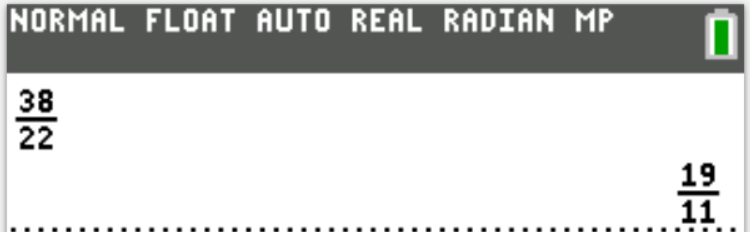
$ F.\;\; -\dfrac{1}{2} \\[5ex] G.\;\; 0 \\[3ex] H.\;\; \dfrac{1}{2} \\[5ex] J.\;\; \dfrac{y - 1}{3(y + 1)} \\[5ex] K.\;\; \dfrac{y - 1}{2(y + 1)} \\[5ex] $
$ \dfrac{y - 1}{y + 1} - \dfrac{2(y - 1)}{4y + 4} \\[5ex] LCD = (y + 1)(4y + 4) \\[3ex] = \dfrac{(y - 1)(4y + 4)}{(y + 1)(4y + 4)} - \dfrac{2(y - 1)(y + 1)}{(y + 1)(4y + 4)} \\[5ex] (y - 1)(y + 1) = y^2 - 1^2 ...\text{Difference of Two Squares} \\[3ex] = \dfrac{4y^2 + 4y - 4y - 4 - 2(y^2 - 1^2)}{(y + 1)(4y + 4)} \\[5ex] = \dfrac{4y^2 - 4 - 2(y^2 - 1)}{(y + 1)\cdot 4(y + 1)} \\[5ex] = \dfrac{4y^2 - 4 - 2y^2 + 2}{4(y + 1)(y + 1)} \\[5ex] = \dfrac{2y^2 - 2}{4(y + 1)(y + 1)} \\[5ex] = \dfrac{2(y^2 - 1)}{4(y + 1)(y + 1)} \\[5ex] = \dfrac{2(y^2 - 1^2)}{4(y + 1)(y + 1)} \\[5ex] = \dfrac{2(y + 1)(y - 1)}{4(y + 1)(y + 1)} \\[5ex] = \dfrac{y - 1}{2(y + 1)} $
She cut those pizzas into 6, 7, 8, and 9 equal pieces, respectively, as shown below, giving 5 slices to each of the 6 boys attending.
If each boy ate all 5 of his slices and had at least 3 different kinds of pizza, which of the following expressions gives the largest amount of pizza that 1 boy could have eaten (expressed in fractions of a pizza)?
$ F.\;\; \dfrac{1}{7} + \dfrac{1}{8} + \dfrac{3}{9} \\[5ex] G.\;\; \dfrac{1}{6} + \dfrac{1}{7} + \dfrac{1}{8} + \dfrac{2}{9} \\[5ex] H.\;\; \dfrac{2}{6} + \dfrac{1}{7} + \dfrac{1}{8} + \dfrac{1}{9} \\[5ex] J.\;\; \dfrac{2}{6} + \dfrac{2}{7} + \dfrac{1}{8} \\[5ex] K.\;\; \dfrac{3}{6} + \dfrac{1}{7} + \dfrac{1}{8} \\[5ex] $
4 different kinds of pizza
1st, 2nd, 3rd, 4th pizza
1st pizza: 6 slices
Fraction per slice = $\dfrac{1}{6}$
2nd pizza: 7 slices
Fraction per slice = $\dfrac{1}{7}$
3rd pizza: 8 slices
Fraction per slice = $\dfrac{1}{8}$
4th pizza: 9 slices
Fraction per slice = $\dfrac{1}{9}$
5 slices given to each boy
At least 3 different kinds of pizza ⇒ 3 or more (in this case: 3 or 4 different kinds of pizza)
For example:
2 slices of 1st pizza: $\dfrac{2}{6}$, 1 slice of 2nd pizza: $\dfrac{1}{7}$, 1 slice of 3rd pizza: $\dfrac{1}{8}$, 1 slice of 4th pizza: $\dfrac{1}{9}$
Another example: 3 slices of 1st pizza: $\dfrac{3}{6}$, 1 slice of 2nd pizza: $\dfrac{1}{7}$, 1 slice of 3rd pizza: $\dfrac{1}{8}$
... and so on and so forth
We are interested in finding the largest fraction of pizza that any boy ate
1st Approach would be to add the fractions in each option and determine the greatest sum
But this approach may take some time.
So, let us do it this way:
Assume 3 different kinds of pizza
Which is greater: $\dfrac{3}{6}$ OR $\dfrac{3}{9}$?
$\dfrac{3}{6}$ is greater
Assume 4 different kinds of pizza
Which is greater: $\dfrac{2}{6}$ OR $\dfrac{2}{9}$?
$\dfrac{2}{6}$ is greater
Now compare the greater of both options
Which is greater: $\dfrac{3}{6}$ OR $\dfrac{2}{6}$?
$\dfrac{3}{6}$ is greater
So, we shall go with this option because it gives the largest fraction: 3 slices of 1st pizza: $\dfrac{3}{6}$, 1 slice of 2nd pizza: $\dfrac{1}{7}$ and 1 slice of 3rd pizza: $\dfrac{1}{8}$